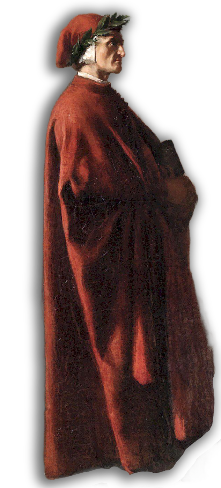

Dante nacque a Firenze nel 1265 in una famiglia della piccola nobiltà guelfa.La sua formazione fu profondamente influenzata dall'incontro con i classici latini(soprattutto Virgilio) e dalla frequentazione dei circoli letterari fiorentini.
▸ Beatrice: L'evento centrale della sua giovinezza fu l'incontro con Bice di Folco Portinari.Sebbene lei morì giovanissima nel 1290, rimase per Dante la musa salvifica e l'ideale spirituale che celebrò nella Vita Nuova.
▸ Lo Stilnovo: Dante fu uno dei massimi esponenti del Dolce Stil Novo, un movimento poetico che vedeva l'amore come uno strumento di elevazione morale e spirituale.
La vita di Dante fu stravolta dalle lotte intestine tra le fazioni dei Guelfi Bianchi (che volevano una maggiore autonomia dal Papa) e dei Guelfi Neri (sostenitori del Papato).
▸ Le Cariche Pubbliche: Nel 1300 Dante fu eletto tra i Priori, la massima magistratura fiorentina. In nome dell'ordine pubblico, arrivò a firmare l'esilio per i capi di entrambe le fazioni, incluso l'amico fraterno Guido Cavalcanti.
▸ La Condanna: Nel 1301, mentre Dante era a Roma in ambasceria presso Papa Bonifacio VIII, i Guelfi Neri presero il potere a Firenze con l'aiuto di Carlo di Valois. Dante fu accusato ingiustamente di corruzione e, non presentandosi per difendersi, fu condannato al rogo e all'esilio perpetuo nel 1302.

Dante non rivide mai più la sua città natale. Visse come un "pellegrino quasi mendicante" presso varie corti dell'Italia settentrionale, tra cui i Scaligeri a Verona e i Da Polenta a Ravenna. In questi anni produsse i suoi scritti più maturi:
▸ La Divina Commedia: Il capolavoro assoluto, un viaggio immaginario attraverso Inferno, Purgatorio e Paradiso per raccontare la redenzione dell'umanità.
▸ Vita Nuova: Il racconto della sua storia d'amore spirituale per Beatrice.
▸ Convivio: Un'opera incompiuta in volgare che mirava a diffondere il sapere filosofico a chi non conosceva il latino.
▸ De Vulgari Eloquentia: Un trattato in latino in cui Dante difende l'uso della lingua volgare per la letteratura illustre.
▸ Monarchia: Un saggio politico in cui sostiene la necessità di un Imperatore universale indipendente dall'autorità del Papa.
Dante trascorse i suoi ultimi anni a Ravenna, dove completò il Paradiso. Morì nella notte tra il 13 e il 14 settembre 1321, di ritorno da una missione diplomatica a Venezia, probabilmente a causa della malaria contratta nelle valli di Comacchio.
Ancora oggi, le sue spoglie riposano a Ravenna: un piccolo tempio neoclassico custodisce le ossa del poeta che Firenze cercò invano di recuperare per secoli.